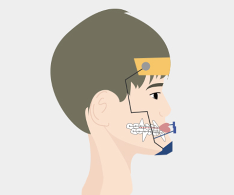
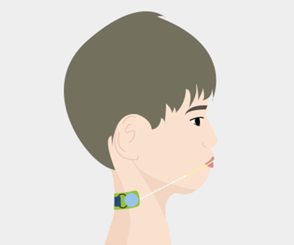
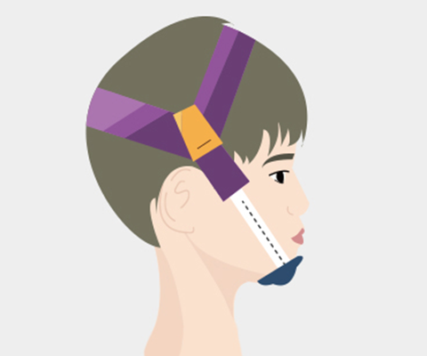

소아 · 청소년 교정
대구사과나무치과는 3차원 정밀 진단 및 분석을
통한 정교한 교정으로 밝고 깨끗한 미소를
만들어드립니다.
Pediatric and adolescent orthodontic
소중한 우리 아이의 평생 자신감
소아 · 청소년 교정
소아·청소년 교정은 영구치와 유치가 섞여있는 혼합치열기에 부정교합이 더 심해지지 않도록 예방하는 치료입니다. 안면골의 성장이 많이 이루어지는 소아.청소년기에는 안면골의 성장 조절을 통한 부정교합의 개선이 가능하므로 시기적절한 진단과 치료가 필수입니다.
Advantages
소아 · 청소년 교정 장점
소아·청소년 교정은 적절한 시기에 치료를 받는다면 성인 부정교합, 수술교정을 예방할 수 있습니다. 또한 성장을 이용해 치료를 하기 때문에
치아 이동이 원활하고 효과적인 치료결과를 얻을 수 있다는 장점이 있습니다.
-
01
부정교합 미리 예방
성장발육을 이용하여 이후 미리 발생될 심한 골격적 부정교합을 미리 예방 및 치료합니다.
-
02
안면교정 가능
위턱, 아래턱의 위치를 고정함으로 단순한 치아이동이아닌 안면교정이 가능합니다.
-
03
2차교정 가능성 줄임
아직 맹출하지 않은 영구치아를 맹출공간 확보함으로써 2차 교정의 가능성을 줄여줍니다.
-
04
발치 가능성 예방
골격적 부조화를 조기에 해결함으로써 발치의 가능성을 줄여줍니다.
-
05
짧은 치료기간
소아교정은 12 ~ 18개월의 짧은 치료기간이 적용됩니다.
-
06
충치 유발 낮춤
몇개의 영구치만을 이용해 교정함으로써 충치유발을 낮춰줍니다.
orthodontic process
소아 · 청소년 교정 과정
소아·청소년 교정의 진행과정은 1차상담 후 정밀검사를 통해 진단 및 분석하여 그것을 토대로 상담 및 치료를 진행합니다.
교정 후 치열 상태를 유지하기 위해 일정기간 유지장치를 착용합니다.
-
01 1차 상담
-
02 정밀 검사
-
03 진단 및 2차 상담
-
04 치료
-
05 교정 후 유지장치
-
06 사후관리
Recommended target
소아 · 청소년 교정 추천대상
소아·청소년 교정의 정확한 시기는 아이들의 성장속도, 치아와 교합의 상태에 따라 개인차가 있을 수 있으니 반드시 교정과에 내원하셔서 치아교정 의료진과 상담 후 체크하시기 바랍니다.
- 유치가 조기상실된 경우, 영구치가 늦게나와 치열이 삐뚤어진 경우
- 손가락 빨기 등의 생활습관으로 생긴 부정교합
- 아랫턱이 위턱에 비해 작거나 더 성장한 경우
- 부모에게 유전성 부정교합이 있는경우
Pediatric preventive orthodontic device
대구사과나무치과 소아 예방 교정장치
소아교정은 구강 및 얼굴 골격이 앞으로 어떻게 성장할 것인지 예상하여 체계적인 교정 계획을 세워야 하는 진료입니다.
때문에 관련 경험과 노하우가 많은 교정과 의료진의 진료를 받을 수 있는지 꼭 체크하시어 치과를 선택하시길 권장드립니다.
-

페이스 마스크
주걱턱 경향이 있는 경우 아래턱의
성장을 잡아주며 위턱에 전방력을 가하여
위턱의 성장을 도와 줍니다. -

헤드기어
위턱에 직접적인 후방력을 가하여 위턱의 성장을
억제하여 위아래턱의
균형있는 성장을 유도합니다. -

친캡
아래턱이 많이 나온 경우
아래턱의 성장조절에
도움을 주는 장치입니다.
Precautions
소아 · 청소년 교정 주의사항
부정교합을 유발하는 생활습관을 꼭 관리해주세요! 소아·청소년 교정을 했더라도 위와 같은 습관들이 반복되거나, 구강청결 관리가 잘 이뤄지지 않을 경우 성인이 되어 재교정이 필요할 수 있으니 부모님의 관리가 필수적으로 필요합니다.
치아에 부착된 교정장치는 작은 충격에도
불편감이 유발되기 때문에 음식물은 잘게 잘라드세요.
식사 후 양치질을
반드시 꼼꼼하게 해주세요.
교정이 끝난 후 치아가 원래 상태로 되돌아오지 못하도록
유지장치를 반드시 착용합니다.
daegu apple tree’s special
대구사과나무치과의 특별함
- 01 4인 원장 협진 ONE-SITE 진료
- 02 3차원 디지털 진료 시스템
- 03 세계보건기구 기준의 철저한 소독관리